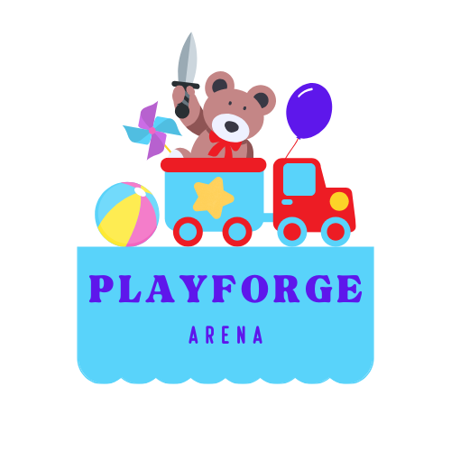
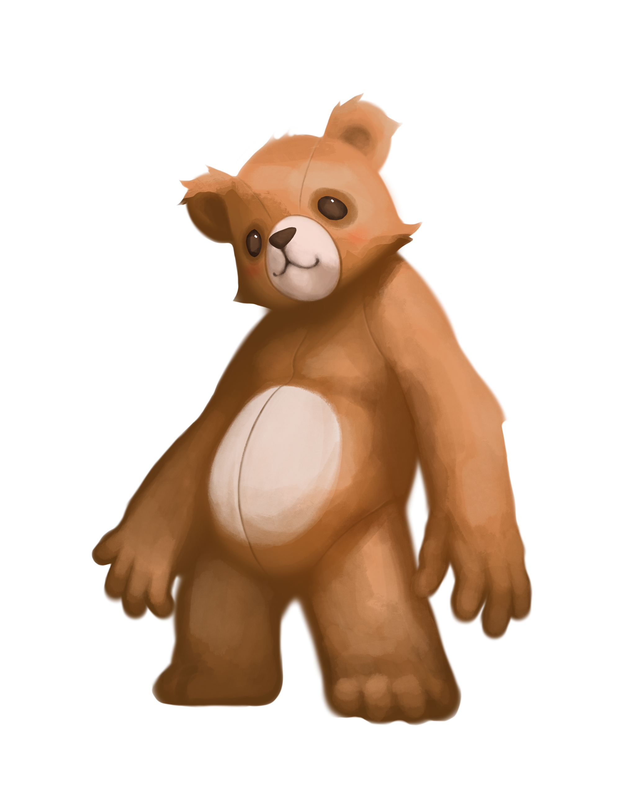
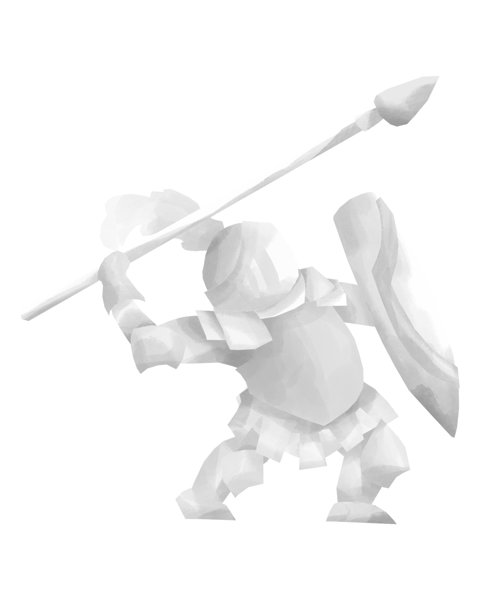

Gameplay Screenshot


A war between the toys in a playroom come to life! Playforge Arena is a online tactics-based game where different toys duel eachother for glory. Each type of toy is led by commander toys, who use their unique properties to give their troops an advantage!

Rules are subject to change, the game is only a prototype.
Two players pick a toy commander, known as a “hero”, and each player starts with three other troops. Their troops start in opposite corners, and must fight to the death. If a player’s hero dies, they lose. The turn order is decided by a dice roll, higher going first. If a tie occurs, the players roll again. Each player then draws 4 cards, and the game begins. If the game goes on for one hour, the players tie due to a stalemate.

At the start of a turn, each player gets energy equivalent to the round number. This energy can be spent, or saved for the next turn. Energy is spent to play cards, which can be played any time. Summon cards summon a new unit onto the field, and must be discarded after playing. Trick cards can amplify other units on the field, and can be reshuffled back into the deck if the player runs out of cards. At any time the player can also control each unit by choosing to move them, and then use an attack or a special ability of that unit. Each turn has a two minute time limit, and a card is drawn at the end of the turn.